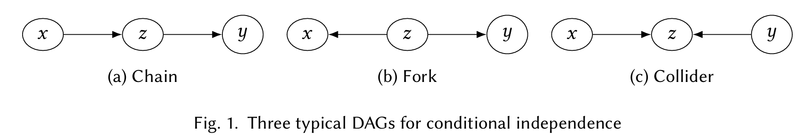
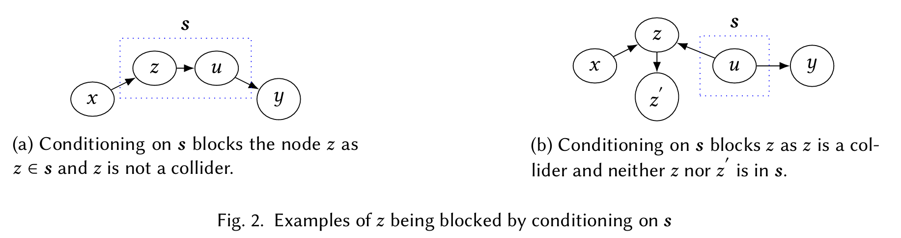
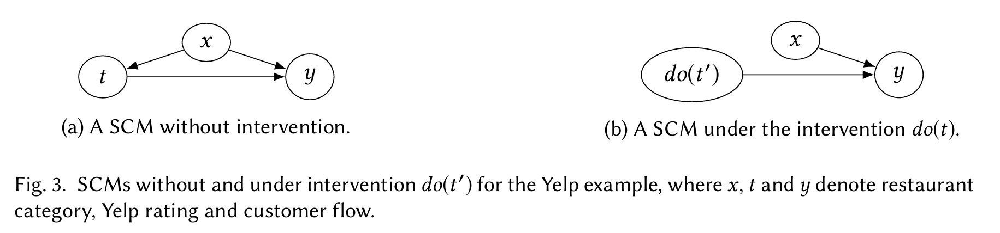
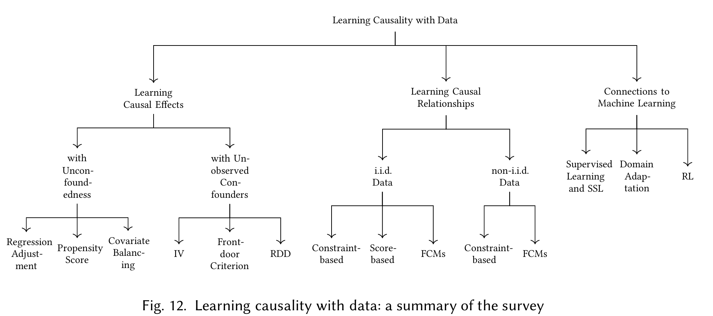

causal
SCM
causal graph
link
fork
collider

上面定义了 causal graph 中三种基本结构, 相关性会在这些结构上 "流动", 即可以通过这些结构组成的路径传递, 由于路径中相邻点有相关性, 整个路径的两个端点就具有了相关性
collider bias
即观测了collider 中的 \(z\), \(x\) 和 \(y\) 反而相关了
例如, 一个妈妈有两个孩子, 当已知其中一个孩子是男孩时, 另一个是男孩的概率变成:
可以看到不是 \(1/2\), 两个孩子的性别相关了
因为两个孩子的性别相当于 \(x,y\), 共同影响了男孩的个数 \(z\), 当 \(z\) 被观测且确定为 \(\geq 1\), 那么 \(x,y\) 就相关了
(如果标注了 Bob 是男孩, Alice 是男孩的概率就还是 \(1/2\))
同样地, 如果其中一个是星期二的男孩, 那么另一个是男孩的概率是
从数样本空间的角度考虑, "两个男孩, 其中一个星期二" 是说从两个都是男孩的 \(49\) 个样本中, 选择至少一个为周二, 那么两个都是周二为 \(1/49\), 一个为周二另一个不是的概率为 \(6/49+6/49\), 所以乘回 \(1/4\) 变成 \(13/196\)
"其中一个星期二男孩" 就是从两个都是星期二男孩的 \(1/196\) 加上一个是星期二男孩, 另一个不是的概率(星期二女孩+其他星期男女孩, \(12+1=13\)), 为 \(13/196+13/196\)
block
如果一条路径上有点被 block 了, 相关性就被阻断了
We say a node \(z\) is blocked by conditioning on a set of nodes \(s\) if one of the two conditions is satisfied:
\(z ∈ s\) and \(z\) is not a collider node (Fig. 2a);
\(z\) is a collider node, \(z \not\in s\) and no descendant of \(z\) is in \(s\) (Fig. 2b)

如果 \(z\) 在 \(s\) 中, \(s\) 被固定了, 那么 \(z\) 就阻断了经过他的路径
-
Fig. 3a Conditioning on a non-collider
\(x \rightarrow z \rightarrow u \rightarrow y\)
建立线性 SCM 方程
\(x = \epsilon_x\)
\(z = a \cdot x + \epsilon_z\)
\(u = b \cdot z + \epsilon_u\)
\(y = c \cdot u + \epsilon_y\)
-
假如不控制 \(z\), 路径通畅
我们把方程代入, 看看 \(x\) 怎么影响 \(y\):
\(y = c \cdot u + \epsilon_y\)
\(= c \cdot (b \cdot z + \epsilon_u) + \epsilon_y\)
\(= c \cdot b \cdot (a \cdot x + \epsilon_z) + c \cdot \epsilon_u + \epsilon_y\)
\(= (a \cdot b \cdot c) \cdot x + \mathcal{L}(\epsilon_u, \epsilon_x, \epsilon_y, \epsilon_z)\)
因此 \(x\) 与 \(y\) 相关
-
假如控制了 \(z\), \(z \in s\), 路径被阻断
在统计学/因果推断中 "控制 \(z\)" 意味着我们在给定 \(z\) 为某个具体值的前提下观察世界
我们将 \(z=k\) 直接代入后面的方程
\(u = b \cdot k + \epsilon_u\)
\(y = c \cdot (b \cdot k + \epsilon_u) + \epsilon_y\)
\(= c \cdot b \cdot k + c \cdot \epsilon_u + \epsilon_y\)
里面完全没有 \(x\) 了\(y\) 的值只取决于常数 \(k\) 和噪声. 这证明了控制非对撞节点 \(z\) 阻断了路径
-
-
Fig. 3b Collider naturally blocks
建立包含对撞结构的线性 SCM 方程 \(x = \epsilon_x\)
\(u = \epsilon_u\)
\(z = a \cdot x + b \cdot u + \epsilon_z\)
\(z' = c \cdot z + \epsilon_{z'}\)
\(y = d \cdot u + \epsilon_y\)
此时如果 \(u\) 没被控制, \(x,y\) 是相关的
而如果 \(u=k\), 那么 \(x,y\) 独立
同时利用这个例子, 考察 \(x,u\)
由于 \(x=\lambda_1 u+\lambda_2 z + \epsilon\), 所以不能说 \(x,u\) 相关
如果令 \(z = m\), 那么 \(x=\lambda_1 u+\lambda_2 z + \epsilon\), 他们就相关了
d-seperate
we say a set of nodes \(s\) d-separates two variables \(x\) and \(y\) iff \(s\) blocks all paths between them
后面会说到, 满足 backdoor criterion 的点集就是 d-seperate
structual equation
causal markovian condition
用条件概率来计算整个图:
do-calculus

由模块化假设, do-calculus 只影响被干预变量的直接 parent, 将其连向被干预变量的边去掉
形式化来说, 对于上面 Fig. 3a, 就是对于 \(t=f_t(x, \epsilon_t)\) 方程, 改写成 \(t=t'\)
意思就是说被干预变量的父亲不会再影响自己, 自己一直是个常量
根据 Fig. 3a, 三个变量的联合概率分布是:
对 \(x\) 进行边缘化得到:
\(P(x)\) 换成 \(P(x \mid t)\), 得到:
这也就是被动观察 \(P(y|t)\) 与主动干预 \(P(y|do(t))\) 的代数差异, 即 \(x\) 不再受 \(t\) 关联的影响, 干预使得两者的因果断开
例子:
设定基础生成方程:
\(x = \epsilon_x\) (混淆变量, 假设期望 \(E[x]=0\))
\(t = \alpha \cdot x + \epsilon_t\) (处理变量)
\(y = \beta \cdot t + \gamma \cdot x + \epsilon_y\) (结果变量, 真实因果效应为 \(\beta\))
- 观察 \(P(y|t)\): 看到 \(t=k\), 顺藤摸瓜猜 \(x\). 假设代数关系 \(E[x|t=k] = \theta \cdot k\) (事实上 \(E[\epsilon_t]=0\) 时 \(\theta=\frac{1}{\alpha}\)), 代入 \(y\) 方程: \(\(E[y|t=k] = \beta \cdot k + \gamma \cdot (\theta \cdot k) = (\beta + \gamma \cdot \theta) \cdot k\)\)
-
干预 \(P(y|do(t))\): 强行命令 \(t=k\)
形式化来说, 就是修改第二个方程使其为 \(t=t'\)
相当于切断了 \(x \rightarrow t\) 的联系, \(x\) 保持均值 \(E[\epsilon_x]=0\).
代入 \(y\) 方程: \(\(E[y|do(t=k)] = \beta \cdot k + \gamma \cdot 0 = \beta \cdot k\)\)
backdoor
backdoor path
Given a pair of treatment and outcome variables \((t, y)\), we say a path connecting \(t\) and \(y\) is a back-door path for \((t, y)\) iff it satisfies that
(1) it is not a directed path;
(2) it is not blocked (it has no collider).
连接 \(t\) 和 \(y\) 的路径, 满足非有向且未被阻断.
之前的 \(y = \beta \cdot t + \gamma \cdot x + \epsilon_y\) 例子中, 考虑图模型 \(t \leftarrow x \rightarrow y\): 1. 非有向: 箭头在 \(t\) 处逆向 (\(t \leftarrow x\)), 像从后门溜出. 2. 未被阻断: \(x\) 是分叉节点, 非对撞节点.
代数后果: 这条路出现了偏差 \(\gamma \cdot \theta\).
对比反例: * 是有向路径: \(t \rightarrow y\), 承载真实因果律 \(\beta\), 是前门而非后门. * 被 blocked: 含对撞节点的路径 \(t \rightarrow m \leftarrow y\), 代数影响自然相互抵消, 不产生额外偏差, 不是活跃的后门.
这个后门的偏差存在会导致原本的 \(t\to y\) 的真实因果路径 (前门路径) 无法正确被计算
backdoor criterion
Given a treatment-outcome pair \((t, y)\), a set of features \(x\) satisfies the back-door criterion of \((t, y)\) iff conditioning on \(x\) can block all back-door paths of \((t, y)\) and \(x\) contains no successors of \(t\).
控制特定变量集合 \(x\) 堵死所有后门路径, 使得观察等同于干预.
第二个条件: \(x\) 不包含 \(t\) 的后代, 主要是防止 \(x\) 包含多余节点, 控制它会导致 collider 被 unblock
同样是之前 \(y = \beta \cdot t + \gamma \cdot x + \epsilon_y\) 的例子, 控制后门变量 \(x\), 即强行切片令 \(x=m\):
代数方程变为 \(y = \beta \cdot t + \gamma \cdot m + \epsilon_y\). 此时比较 \(t=k\) 和 \(t=k+1\) 时的预期 \(y\) 差异:
通过纯观察运算提取出了纯粹的因果参数 \(\beta\). 在后门被堵死的代数空间里, \(P(y|t, x)\) 完美等价于 \(P(y|do(t))\).
满足 backdoor criterion 的就是 d-seperate
confounder
confounding bias
backdoor path 的存在解释了 confounding bias 的存在:
Given variables \(y\), \(t\), confounding bias exists for causal effect \(t → y\) iff the statistical association is not always the same as the corresponding interventional distribution, namely \(P(y|t) \not= P(y|do(t))\).
统计关联不等于干预分布, 即 \(P(y|t) \neq P(y|do(t))\).
对比 do-calculus 中两式的计算结果:
多出来的 \(\gamma \cdot \theta\) 就是混淆偏差在代数上的精确体现, 它导致观察到的效应偏离了真实的因果效应 \(\beta\).
confounder (confounding variable)
有了 backdoor path 定义, 就可以定义 confounder:
Given a pair of treatment and outcome variables \((t, y)\), we say a variable \(z \not\in \set{t, y}\) is a confounder iff it is the central node of a fork and it is on a back-door path of \((t, y)\).
导致上述偏差产生的共因变量.
代数上, 偏差 \(\gamma \cdot \theta\) 存在的前提是 \(\gamma \neq 0\) 且 \(\theta \neq 0\) (即 \(\alpha \neq 0\)). 这意味着变量 \(x\) 既影响 \(y\), 又影响 \(t\), 那么 \(x\) 就是这条链路中的混淆变量.
backdoor adjustment
causal identification
消除 confounder 的过程
后门调整是利用充分调整集 \(S\) (满足后门准则的点集) 直接计算因果效应的方法
对于 Fig. 3a, \(S=\set{x}\). 可以将 \(P(y \mid do(t))\) 拆成:
由于模块化假设, \(do(t)\) 只对 \(Pa_t\) 有影响, 对 \(y\) 没影响, 所以
同时 \(W\) 不包含 \(t\) 的后代, 且位于 backdoor path 上面, 说明 \(W\) 和 \(t\) 之间的因果路径一定被切断了, 所以相对于 \(t\) 独立, \(t\) 的干预对 \(W\) 没作用:
后门调整公式可以把因果效应的计算转化为统计量:
selection bias (confounding bias without backdoor path)
在因果推断（Causal Inference）中，选择性偏差（Selection Bias）是一个非常核心且极具迷惑性的概念。
为了回答你的问题，我们需要从因果图（DAG，有向无环图）的角度，深入剖析什么是选择性偏差，以及为什么它能在没有后门路径（Backdoor Path）的情况下，产生类似混杂偏差（Confounding Bias）的虚假相关性。
一、 什么是选择性偏差（Selection Bias）？
在因果推断的结构因果模型（SCM，Judea Pearl 提出）中，偏差主要来源于对变量的不当条件化（Conditioning）。
- 混杂偏差（Confounding Bias）：是因为没有对“共同原因（Common Cause）”进行控制（即没有阻断后门路径）而产生的偏差。
- 选择性偏差（Selection Bias）：是因为错误地对“共同结果（Common Effect，即对撞因子 Collider）”或其子代进行了控制（即只在特定样本子集中进行分析）而产生的偏差。
简而言之，选择性偏差发生在数据收集或数据分析阶段，当我们只观察或筛选了满足特定条件（\(S=1\)）的样本时，我们就已经在数学上对变量 \(S\) 进行了条件化处理。
二、 核心机制：对撞因子（Collider）与伯克森悖论
为了理解选择性偏差，必须引入对撞因子（Collider）的概念。
假设你想研究变量 \(X\)（例如：外貌出众）对变量 \(Y\)（例如：演技精湛）的因果影响。 在普通人群中，\(X\) 和 \(Y\) 是完全独立的（长得好看并不意味着演技好，反之亦然），它们之间没有任何后门路径，也没有共同原因。
但是，这两个变量都会影响另一个变量 \(S\)（例如：成为好莱坞明星）。 因果图如下： \(\(X \rightarrow S \leftarrow Y\)\) 在这个图中，\(S\) 就是一个对撞因子（Collider），因为箭头的方向在 \(S\) 处发生了“对撞”。
为什么对撞因子会导致偏差？（伯克森悖论 Berkson's Paradox）
在因果图中有一条铁律：对撞因子默认是阻断（Block）路径的，但如果你对它进行条件化（Conditioning），这条路径就会被打开。
让我们回到好莱坞的例子： 假设成为好莱坞明星（\(S=1\)）的条件是：要么外貌出众（\(X=1\)），要么演技精湛（\(Y=1\)），或者两者兼具。
如果你只在“好莱坞明星”这个群体中（即条件化 \(S=1\)，这就是选择性偏差的来源）研究外貌和演技的关系，会发生什么？ * 如果你看到一个明星外貌不出众（\(X=0\)），因为他已经是明星了（\(S=1\)），那么他必定演技精湛（\(Y=1\)）。 * 如果你看到一个明星演技很差（\(Y=0\)），那么他必定外貌极其出众（\(X=1\)）。
结果是：在好莱坞明星这个样本中，外貌和演技呈现出强烈的负相关。
这就是选择性偏差！尽管在总体人群中 \(X\) 和 \(Y\) 毫无关系（没有后门路径），但由于你“选择”了特定的样本（\(S=1\)），硬生生在 \(X\) 和 \(Y\) 之间制造出了一条虚假的相关性路径。
三、 为什么这会导致“没有后门路径的 Confounding Bias”？
这个问题非常精准。在传统的流行病学或统计学中，人们常常把所有“导致虚假相关、掩盖真实因果效应的偏差”统称为“混杂（Confounding）”。但在严谨的图模型中，我们要区分它们：
- 真正的混杂（Confounding）：存在 \(X \leftarrow Z \rightarrow Y\)（后门路径）。
- 选择引起的虚假相关（Selection Bias）：存在 \(X \rightarrow S \leftarrow Y\)，且我们对 \(S\) 进行了筛选。
为什么它表现得就像 Confounding Bias 一样？
当你试图估计 \(X \rightarrow Y\) 的真实因果效应时，你希望观察到的相关性仅仅来自 \(X\) 到 \(Y\) 的有向路径。
- 场景 A（后门路径未阻断）：你不仅看到了 \(X \rightarrow Y\)，还看到了 \(X \leftarrow Z \rightarrow Y\) 传导的相关性。这两者混在一起，你得不到真实的因果效应。
- 场景 B（发生选择性偏差）：假设 \(X\) 和 \(Y\) 之间根本没有后门路径 \(Z\)。但是，在数据收集时，你的样本只包含了住院病人（\(S=1\)）。由于疾病 \(X\) 会导致住院，疾病 \(Y\) 也会导致住院（\(X \rightarrow S \leftarrow Y\)）。在住院病人（\(S=1\)）中，\(X\) 和 \(Y\) 产生了虚假的相关性。
在这两种场景下，数学上的后果是完全一样的：你观察到的 \(P(Y|X)\) 并不等于介入后的概率 \(P(Y|do(X))\)。
这就解释了为什么它被称为“没有后门路径的混杂”： 即使你完美地确保了 \(X\) 和 \(Y\) 之间没有任何共同的祖先（没有后门），但只要你在数据分析时，无意中对 \(X\) 和 \(Y\) 的“共同结果（Collider）”或其子节点进行了控制（比如：只分析完整填写问卷的人、只分析存活下来的人、只分析被录用的员工），一条非因果的“后门”实际上就被你在数据中人为地“挖”出来了。
这条人为打开的路径（\(X \rightarrow \fbox{S} \leftarrow Y\)）传递了非因果的信息流，和传统的后门路径一样，污染了你对因果效应的估计。
四、 现实中的经典案例
- 幸存者偏差（Survivor Bias）：二战飞机装甲防护问题。研究的样本（\(S=1\)）是“成功飞回来的飞机”。引擎中弹（\(X=1\)）和机翼中弹（\(Y=1\)）都会影响飞机是否坠毁（\(S=0\)）。飞回来的飞机中，引擎几乎没有弹孔，导致军方误以为引擎不需要加固。这就是对“存活（Collider）”进行了条件化产生的选择性偏差。
- 失访偏差（Attrition Bias / Missing Data）：在医学试验中，吃药（\(X\)）可能会有副作用导致患者退出试验，而病情恶化（\(Y\)）也会导致患者退出试验。如果研究人员只分析坚持到最后的患者（\(S=1\)），吃药 \(X\) 和病情 \(Y\) 之间就会产生虚假的关联，即使药物根本无效（没有后门，也没有因果）。
总结
- 选择性偏差是因为我们在分析时，局限于某个特定的样本子集（即控制了某个变量 \(S\)）。
- 当这个变量 \(S\) 是处理变量（\(X\)）和结果变量（\(Y\)）的共同结果（对撞因子）时，控制 \(S\) 会打破 \(X\) 和 \(Y\) 原本的独立性。
- 这导致了一条全新的、非因果的路径被打开。
- 因此，即使 \(X\) 和 \(Y\) 之间绝对没有共同原因（没有后门路径），这种选择性操作也会在数据中制造出虚假的相关性，其对因果推断的破坏效果与未控制混杂因素（Confounding Bias）完全相同。
一句话口诀：阻断后门路径（控制混杂），但千万别动对撞因子（避免选择性偏差）！
counterfactuals
probability of necessity (PN)
Causes of Effects and Effects of Causes
这篇文章的主旨可以先压成一句话：“effects of causes” 问“干预 (X) 会怎样改变 (Y)”；“causes of effects” 问“已经看到 (X=x) 且 (Y=y) 之后，(X) 是否真的是这次 (Y) 的原因”。Pearl 这篇文的核心观点是：后者并不是“不可科学化”的哲学问题，而是可以在结构因果模型 + 反事实语义下被严格定义、求界，且在一些条件下还能被识别。文章特别用法律责任中的“药物是否导致某人的死亡”来说明：把实验数据和观察数据结合起来，往往比只看 randomized trial 更能回答“这一个人是不是因药而死”。
下面我按公式出现顺序讲，并把两个数值例子都完整拆开。
1. 结构模型部分：反事实是怎么被数学化的
公式 (v_i=f_i(v,u))
文中先定义一个结构模型 (M=(U,V,F))。其中 (U) 是外生变量，表示背景条件；(V) 是内生变量，表示系统内要解释的变量；(F) 是一组结构方程。对每个 (V_i\in V)，都有一条方程
[ v_i=f_i(v,u). ]
这句话的意思不是“做回归”，而是：自然界按某种机制，用当前系统中其他变量 (v) 和背景条件 (u) 来决定 (V_i) 的取值。因此，一旦给定某个外生状态 (U=u)，所有内生变量 (V) 的值都被唯一确定；如果再给 (U) 一个分布 (P(u))，就诱导出 (V) 的分布 (P(v))。这就是 Pearl 之后一切反事实概率的基础：反事实不是空想，而是在一个生成模型里对“同一个个体、不同干预下会怎样”做逻辑推演。
公式 (1)：反事实的定义
文中把“在同一个情形 (U=u) 下，如果把 (X) 强制设成 (x)，那么 (Y) 会是多少”记为 (Y_x(u))，并给出定义
[ Y_x(u);\overset{\Delta}{=};Y_{M_x}(u). \tag{1} ]
这里 (M_x) 表示把原模型里关于 (X) 的那条方程“手术式”替换成 (X=x) 之后得到的新模型。也就是你并不去改其他机制，只是最小程度地把 (X) 固定住，再看新的系统解里 (Y) 取什么值。这个“surgical modification”就是 do-operator 背后的语义。公式 (1) 的精髓是：反事实不是语言游戏，而是“在修改后的模型中求解”。
反事实联合分布为何是合法的
文章接着强调：一旦模型 (M) 和 (P(u)) 给定，像 (Y_x)、(Z_{x'}) 这种看上去“不能同时观察”的量，仍然可以有联合分布。因为它们对应的是同一总体中不同个体的潜在结果类型比例，不是说同一个个体要同时接受 (x) 和 (x')。所以
[ P(Y_x=y,; Z_{x'}=z) ]
在语义上是完全良定义的。这个点非常重要，因为 “causes of effects” 本质上就是在问一个交叉世界问题：现实里他取了 (x) 且结果是 (y)，但如果没取 (x) 会怎样。
CoE 查询的原型
文中给出了一类典型的 CoE 问题：
[ P(Y_{x_1}=y_1\mid Y=y_0,;X=x_0). ]
意思是：对现实中 (X=x_0, Y=y_0) 的人，若改成 (X=x_1)，结果会变成 (y_1) 的概率是多少。这个条件概率就是“从群体信息推个体反事实”的正式表达。
反事实计算三步：abduction, action, prediction
文章把一般反事实查询 (P(Y_x=y\mid e)) 的计算写成三步：
- abduction：用观察到的证据 (e) 更新外生变量分布，从 (P(u)) 得到 (P(u\mid e))；
- action：把模型中 (X) 的方程替换成 (X=x)；
- prediction：在修改后的模型里预测 (Y=y) 的概率。
这三步其实非常经典：先根据现实证据反推“这个人可能属于哪一类外生类型”，再做干预，再推断结果。Pearl 想强调的是，CoE 并不需要比 EoC 更多的新数学机械；它还是同一套反事实逻辑。
2. 法律责任部分：文章真正关心的量是什么
文章转到一个法律场景：某人服药后死亡，法院要判断“是否 more probable than not 是药物导致了他的死亡”。在这个场景里，(X=x) 表示服药，(Y=y) 表示死亡；(x')、(y') 表示它们的否定。
公式 (2)：概率必要性 (PN)
文章把目标量定义为
[ PN(x,y)=P(Y_{x'}=y'\mid X=x,;Y=y). \tag{2} ]
这是全文最核心的式子。它问的是：
对于现实中“服了药并且死了”的人，如果他没有服药，他是否会活下来？
这正是法律里的 “but for” 标准：若不是因为被告行为，损害是否就不会发生。所以 (PN) 在这里被称为 probability of necessity。注意这不是一般平均因果效应，而是已经知道这个具体人“确实服药且确实死亡”之后，对他做的个体级反事实判断。
即假设复活了这一批被观察到 "服药且死亡" 的人并进行实验(干预), 让他们不服药, 那么他们不死的概率
DFF 的 (PC^*) 与 (PN) 的区别
文中还对比了 Dawid, Fienberg, Faigman 提出的量
[ PC^*=P(Y_{x'}=y'\mid Y_x=y). ]
这个量条件化的是“在实验环境里，接受 (x) 后死亡的人”。Pearl 认为它不适合法律场景，因为法庭面对的不是“被随机分配服药后死亡的人”，而是“现实中自己选择服药且死亡的人”。现实中的服药选择可能与病情严重程度、获得药物能力等混杂因素有关，所以 (PC^*) 的参考类太粗，不足以回答现实案件中的个体责任问题。
X=x,Y=y 表示观察到的数据, Y_x=y 表示干预数据, 即实验数据. 这会忽略非实验环境中的混杂因素
3. 识别结果：公式 (3)、(4)、(5)
单调性假设
定理 1 假设 (Y) 对 (X) 单调：
[ Y_1(u)\ge Y_0(u). ]
在药物致死的语境里，它表示：吃药不会让本来会死的人活下来；药物最多不影响死亡，或者导致额外死亡，但不会“预防”死亡。这个假设把潜在结果类型收缩了，所以 (PN) 就可识别。
公式 (3)
在单调性下，文中给出
[ PN=\frac{P(y)-P(y\mid do(x'))}{P(x,y)}. \tag{3} ]
这个式子可以直观理解成：
- 分子 (P(y)-P(y\mid do(x')))：总体里“额外的死亡比例”，也就是相对于不给药时，现实中多出来的死亡；
- 分母 (P(x,y))：现实中“服药且死亡”的那部分人。
所以 (3) 本质上是在问：现实中服药死亡的人里，有多大比例属于“若不给药就不会死”的那部分额外死亡。这正好对应 necessity。
P(y) 表示死亡的人, P(y\mid do(x')) 表示实验中不服药也死亡的人, 那么两者相减除以 P(x,y) 就等于在服药且死亡的人中如果不服药, 可能死亡或不死亡, 排除死亡的人, 就是不服药就不死亡的人
公式 (4)
作者又把 (3) 改写成
[ PN ==
\frac{P(y\mid x)-P(y\mid x')}{P(y\mid x)} + \frac{P(y\mid x')-P(y\mid do(x'))}{P(x,y)}. \tag{4} ]
这一步只用到了
[ P(y)=P(y\mid x)P(x)+P(y\mid x')(1-P(x)) ]
和
[ P(x,y)=P(y\mid x)P(x). ]
我把它的意义说得更直白一点：
第一项
[ \frac{P(y\mid x)-P(y\mid x')}{P(y\mid x)} ]
就是流行病学里常见的 excess risk ratio (ERR)。如果只看观察数据，它似乎在度量“服药死亡者中有多少是额外风险”。
第二项
[ \frac{P(y\mid x')-P(y\mid do(x'))}{P(x,y)} ]
是混杂校正项。如果现实里“不吃药的人”的死亡率 (P(y\mid x')) 跟“把所有人都强制设成不吃药时”的死亡率 (P(y\mid do(x'))) 不一样，那说明存在 confounding，仅用观察数据的 ERR 会偏。Pearl 的关键观点就是：法庭想要的 (PN) 不等于观察相关，也不等于实验平均效应，而是 ERR 加上一个 confounding correction。
公式 (5)：无单调性时的上下界
如果不假设单调性，(PN) 一般不能点识别，但可以被紧致地界住：
[ \max\left{0,\frac{P(y)-P(y\mid do(x'))}{P(x,y)}\right} \le PN \le \min\left{1,\frac{P(y'\mid do(x'))-P(x',y')}{P(x,y)}\right}. \tag{5} ]
这对法律很有用：即便你不敢说“药一定不会预防死亡”，也还能用实验 + 观察数据给出最保守的责任下界和上界。下界告诉你“至少有多大概率是它导致的”，上界告诉你“至多有多大概率是它导致的”。文章强调，这个界在一般非单调情形下也是 tight 的。
4. 第一个数值例子：Table 1 与公式 (6)–(13)
表 1 的含义
表 1 给了两组假想数据：
- 实验数据：1000 人随机服药 (do(x))，1000 人随机不服药 (do(x'))；
- 非实验数据：1000 人现实中自己选择服药 (x)，1000 人自己选择不服药 (x')。
表中计数是：
- 实验组：服药死 16、活 984；不服药死 14、活 986；
- 观察组：自选服药死 2、活 998；自选不服药死 28、活 972。
公式 (6) 与 (7)：实验因果效应
由实验表直接得到
[ P(y\mid do(x))=\frac{16}{1000}=0.016, \tag{6} ] [ P(y\mid do(x'))=\frac{14}{1000}=0.014. \tag{7} ]
这表示：若随机给药，死亡率是 1.6%；若随机不给药，死亡率是 1.4%。所以平均因果效应很小，只高了 0.2 个百分点。只看实验，你会觉得药几乎没多大危害。
公式 (8)–(11)：观察分布
非实验数据给出
[ P(y)=\frac{30}{2000}=0.015, \tag{8} ] [ P(y,x)=\frac{2}{2000}=0.001, \tag{9} ] [ P(y\mid x)=\frac{2}{1000}=0.002, \tag{10} ] [ P(y\mid x')=\frac{28}{1000}=0.028. \tag{11} ]
这组数很“反常”：现实里自选服药者的死亡率只有 0.2%，而自选不服药者的死亡率是 2.8%。若你只看观察相关，会得出“这药似乎在保命”的结论。Pearl 故意构造这个例子，就是为了说明：观察相关和个体因果责任可以完全反着来。
公式 (12)：代入 (4) 计算 (PN)
在单调性“药只能致死、不能救命”下，由 (4)
[ PN ==
\frac{P(y\mid x)-P(y\mid x')}{P(y\mid x)} + \frac{P(y\mid x')-P(y\mid do(x'))}{P(x,y)}. ]
代入 (9)–(11) 与 (7)：
[ PN ==
\frac{0.002-0.028}{0.002} + \frac{0.028-0.014}{0.001} =========================
-13 + 14 = 1. \tag{12} ]
这一步是全文最震撼的数值结论。
第一项 (-13) 是观察 ERR，强烈暗示“药在防死”。
第二项 (+14) 是混杂校正项，把前面的假象完全扭回来。
最后得到 (PN=1)，意思是：对现实中“自选服药且死亡”的人来说，如果他没服药，他一定会活下来。也就是法律意义上“药致死”的概率为 1。
用公式 (5) 再验证一次：即便不假设单调性，仍然得到 1
文章还指出，即使不用单调性，(5) 的下界也已经是 1。确实：
[ \text{LB} =========
\max\left{0,\frac{0.015-0.014}{0.001}\right}
\max{0,1}=1. ]
而上界是
[ \text{UB} =========
\min\left{1,\frac{0.986-0.486}{0.001}\right}
\min{1,500}=1. ]
所以下界上界都等于 1，故 (PN=1) 被直接锁死。这个点很关键：这个案例里“个体责任概率为 1”不是靠额外主观假设硬撑出来的，而是由两组数据共同强约束出来的。
公式 (13)：如果按 DFF 的实验风险比，只会得到 0.125
DFF 倾向于用实验中的 excess risk ratio：
[ \frac{P(y\mid do(x))-P(y\mid do(x'))}{P(y\mid do(x))} =====================================================
\frac{0.016-0.014}{0.016}
0.125. \tag{13} ]
这远低于 “more probable than not” 所需的 0.5。Pearl 的批评是：只看 randomized trial 的平均效应，会错过现实中“哪些人会主动选择治疗”这件事带来的选择机制信息；而这些选择机制恰恰是个体因果责任判断所必须考虑的。
这个例子的直觉解释
Pearl 的解释是：临终重症患者倾向于避免这种药，所以观察数据里“不服药组”聚集了很多本来就要死的人，于是其死亡率非常高；反过来，自选服药者大多不是终末期，所以表面上看死亡率极低。于是：
- 实验数据告诉你：药物本身有轻微致死效应；
- 观察数据告诉你：会主动选药的人，恰好不是那批最危险的人。
把两者拼在一起，就得到：凡是在现实中自选服药却仍然死亡的人，几乎只能是被药害死的。这就是文章最想展示的“融合实验与观察信息来做个体反事实判断”的力量。
5. 第二个数值化模型：公式 (14)–(18)
这一节不是给具体数字表，而是给一个参数化生成模型，用来研究 PN 上下界到底多敏感。图 1 里有一个未观测混杂因子 (Z)，它同时影响治疗选择 (X) 和结局 (Y)：(Z\to X), (Z\to Y)，并且 (X\to Y)。文章把 (Z) 解释为“致死综合征”，既会提高死亡风险，又会让患者更不愿吃药。
设定如下：
- (r)：总体中患综合征的人所占比例；
- (Z=z_1)：有综合征，且是终末病例，不论是否服药都以概率 1 死亡；
- (Z=z_0)：无综合征，服药死亡概率为 (p_2)，不服药死亡概率为 (p_1)；
- (q_1=P(x_1\mid z_0))：普通人选择服药的概率；
- (q_2=P(x_1\mid z_1))：综合征患者选择服药的概率，且假设 (q_2<q_1)，也就是更危险的人更倾向于避药；
- 还假设 (p_2>p_1)，即药对普通人是风险因子。
公式 (14)：干预分布
文中写
[ P(y\mid do(x))=\sum_z P(y\mid x,z)P(z). \tag{14} ]
这就是 back-door adjustment。因为在干预 (do(x)) 下，治疗选择机制被切断，剩下只要对混杂变量 (Z) 做边缘化即可。它表达的是：在设定治疗状态后，总死亡率等于各个 (Z) 亚群的条件死亡率按总体 (P(z)) 加权平均。
公式 (15)：观察联合分布
然后
[ P(y,x)=\sum_z P(y\mid x,z)P(x\mid z)P(z). \tag{15} ]
这和 (14) 的差别在于，这里是现实观察分布，所以不能把 (X) 当作外部设定量；必须保留 (P(x\mid z))，即“不同 (Z) 类型的人会以不同概率自选治疗”。也正因为这一项存在，观察数据里会出现 confounding。
公式 (16)：在 (r=\tfrac12) 下的干预死亡率
文中令 (r=\tfrac12)，得到
[ P(y_1\mid do(x)) ================
\begin{cases} (1+p_2)/2, & x=x_1,\ (1+p_1)/2, & x=x_0. \end{cases} \tag{16} ]
推导很简单：
- 一半人有综合征 (z_1)，无论吃不吃药都必死，贡献 (1/2)；
- 另一半人没综合征 (z_0)，若吃药则死于 (p_2)，若不吃则死于 (p_1)，贡献分别为 (p_2/2) 或 (p_1/2)。
所以总死亡率分别就是 ((1+p_2)/2) 与 ((1+p_1)/2)。
公式 (17)：观察联合分布四格表
文中给出四种 ((x,y)) 组合的概率。按照模型本身，正确理解应是：
[ P(y,x)= \begin{cases} (q_2+p_2q_1)/2, & x=x_1,; y=y_1,[2mm] \big[(1-q_2)+p_1(1-q_1)\big]/2, & x=x_0,; y=y_1,[2mm] (1-p_2)q_1/2, & x=x_1,; y=y_0,[2mm] (1-p_1)(1-q_1)/2, & x=x_0,; y=y_0. \end{cases} \tag{17} ]
每一项都很好解释。比如第一项：
- 有综合征者占一半，其中以概率 (q_2) 选药，且必死；
- 无综合征者占一半，其中以概率 (q_1) 选药，且死于概率 (p_2)。
合起来就是 ((q_2+p_2q_1)/2)。
这里我要提醒你一个细节：PDF 截图里第三行排版看起来像多了一个 (q_2) 项，但那样四个格子的概率和将不再等于 1，也与前述模型假设矛盾；结合 (18) 的推导可以判断，这里应视为一个排版/印刷错误，正确项应为 ((1-p_2)q_1/2)。这是我根据模型本身和后续公式做出的推断。
公式 (18)：PN 的上下界
由 (5) 代入 (16) 与 (17)，文章得到
[ \frac{p_2-p_1}{p_2+q_2/q_1} \le PN \le \frac{1-p_1}{p_2+q_2/q_1}. \tag{18} ]
这个式子非常漂亮，因为它把 PN 的信息量压缩到四个参数里了：
- (p_2-p_1) 越大，说明药对普通人的致死增量越大，下界越高；
- (q_2/q_1) 越小，说明危险人群越不愿意服药，选择偏差越强，下界和上界都越高；
- 分母 (p_2+q_2/q_1) 可以理解为“药物真实伤害 + 选择机制掺杂”的综合难度项。
何时点识别
文中说令上下界相等，可知 (PN) 被识别当且仅当
[ q_1(1-p_2)=0. ]
即要么 (q_1=0)，普通人从不服药；要么 (p_2=1)，普通人只要服药必死。你可以直接从 (18) 看出来：上下界差为
[ \frac{1-p_2}{p_2+q_2/q_1}, ]
所以它为 0 的充要条件正是 (1-p_2=0) 或 (q_1=0)。Pearl 的意思是：一般情况下 PN 仍然只有区间，但在一些极端机制下，区间会塌缩成一点。
Figure 2 的意义
文章接着把 (p_1=0)，并定义
[ \beta=\frac{q_2}{q_1p_2}. ]
于是 (18) 的下界化为
[ \frac{1}{1+\beta}, ]
上界化为
[ \frac{1}{p_2(1+\beta)}. ]
所以：
- (\beta\to 0) 时，下界 (\to 1)；
- 上界始终是下界的 (1/p_2) 倍。
图 2 正是在展示这件事：红线是统一下界，蓝线是不同 (p_2) 下的上界；(\beta) 越小，PN 越接近 1。你还可以看到图上画了一条 (0.5) 的横线，对应法律里的 “more probable than not”。顺便一提，图注写成了 “(p_1=1)” ，但正文明确说这里取的是 (p_1=0)，而且图形本身也只与 (p_1=0) 相符，因此这里也大概率是一个笔误。
6. 最后一节：为什么“个体责任概率 = 1”并不荒谬
文章最后回应两个常见质疑：
第一，反事实通常不可直接观测，为什么还能被精确确定？
第二，为什么可以用群体样本去对一个没被直接测试的个体说“概率就是 1”？
Pearl 的回答是：一旦量被形式化，数据就可能在某些条件下把它约束到唯一值；而法律上的“more probable than not”本来也不是要求掌握个体所有生理心理细节，而是要求在当前可用且可靠的最具体参考类上做判断。对这个药物案例来说，最关键的个体信息是“他现实中服药了，而且死了”；这已经比只看实验组平均效应具体得多，所以可以把 PN 条件化到这个更具体的 reference class 上。
7. 你读完这篇文章后，最该抓住的三个点
第一，这篇文不是在重新发明一个新因果量，而是在强调：CoE 的正确目标量是 [ PN=P(Y_{x'}=y'\mid X=x,Y=y), ] 不是简单的平均处理效应，也不是只在实验环境里定义的 (PC^*)。
第二，公式 (4) 很关键，因为它把个体责任拆成了：
- 观察上的 excess risk ratio；
- 加上一个由 (do(\cdot)) 识别出来的 confounding correction。
所以这篇文章最深的思想不是“反事实很玄”，而是：个体因果责任 = 相关性部分 + 去混杂后的修正部分。
第三，数值例子 1 的真正信息是：实验数据和观察数据分开看都可能误导，但两者结合起来反而能把个体反事实判断锁得非常死。 这也是 Pearl 一贯主张的“融合不同来源因果信息”的范式。
如果你愿意，我下一条可以继续做两件事中的一件：一是把这篇文章里的所有公式改写成你更熟悉的 potential outcomes 记号；二是把它和你现在关心的 causal credit assignment / token-level attribution 联系起来。
causal attribtuion
Causal attribution with confidence
通过估计 PN 值进行因果归因
POF
causal effect
潜在结果 \((y_i^1, y_i^0)\): 对于每一个体 \(i\) 都同时客观存在两个平行的数值, \(y_i^1\), \(y_i^0\) 表示是否接受治疗的两个潜在结果, 值不依赖于个体在现实中到底有没有接受处理 (\(t_i\))
观测结果 \(y_i\): 实际的结果, 可以看成一个“开关”**, 根据 \(t_i\) 的状态显示潜在结果中的某一个, 把另一个隐藏起来
一致性方程 / 切换方程:
\((y_i^1, y_i^0)\) 是常数/固定属性, \(y_i\) 的最终取值是受代数变量 \(t_i\) 支配的
就是说 \((y^1, y^0)\) 是一个二维向量属性, 不受 \(t\) 影响
\(y\) 是一个一维标量, 它的值取决于 \(t\) 的代数运算
assumptions
SUTVA = well-defined treatment level + no interference
-
well-defined treatment level
given two different instances \(i , j\), if the values of their treatment variable are equivalent, then they receive the same treatment.
如果两个人表面上受到的处理 \(t\) 是一样的, 那么他们接受的"真实剂量/内容"必须完全一样, 不存在"名为同一种药，实际浓度不同"的情况
例如, 两个人都接受接受治疗, 但张三遇到了名医, 李四遇到了水货
-
no interference
the potential outcomes of an instance is independent of what treatments the other units receive, which can be formally expressed as \(y_i^t=y_i^{t_i}\), where \(t ∈ \set{0,1}^n\) denotes the vector of treatments for all instances.
潜在结果只取决于你自己的处理 \(t_i\), 不受其他人是否接受处理影响
在因果图上, 个体 \(j\) 的处理节点 \(t_j\) 到个体 \(i\) 的结果节点 \(y_i\) 之间不能有箭头 * 假设我们研究打疫苗 \(t\) 对感染概率 \(y\) 的影响 * 无传染病, 只受自己 \(t\) 的影响, 与别人无关 * 有传染病, 如果别人打了疫苗不生病, 自己被传染的概率也会降低
consistency
the observed outcome is independent of the how the treatment is assigned
观测到的结果 \(y\) 就是与实际接受的处理 \(t\) 对应的那个潜在结果
例如, 无论是医生逼你吃药还是你自愿吃药, 药效是一样的, 不会因为强迫, 心情变差导致药效减弱
ignorability
the values of the potential outcomes are independent of the observed treatment, given the set of confounding variables.
Mathematically, unconfoundedness can be formulated as:
\[y_i^1, y_i^0 \perp\!\!\!\perp t_i \mid s,\]where \(s\) denotes a vector of confounders, namely a subset of features that causally influences both the treatment \(t_i\) and the outcome \(t\)
在控制了所有的混淆变量集合 \(s\) 后, 潜在结果 \((y^1, y^0)\) 和处理分配 \(t\) 是条件独立的.
就是说, 在具有相同特征 \(s\) 的人群中, 吃药这个决定是纯随机的.
-
例子
用期望值 \(E[\cdot]\) 考察独立性: 若 \(A, B\) 独立, 则 \(E[A|B=1] = E[A|B=0]\).
设定病人的固有属性: 年龄 \(s_i\) (可观测), 先天体质 \(u_i\) (不可观测). 潜在结果 (健康底色) 受两者共同决定: \(\(y_i^0 = \alpha \cdot s_i + \beta \cdot u_i\)\)
设定分配机制: 医生仅根据年龄 \(s_i\) (倾向给老人开药) 和随机抛硬币决定是否给药 \(t_i\), 且看不到体质 \(u_i\).
不控制 \(s\) 时: 吃药组 (\(t_i=1\)) 往往包含了更多老人, 即 \(E[s_i \mid t_i=1] > E[s_i \mid t_i=0]\).
分别计算两组人的潜在健康底色期望 (注: 给药 \(t_i\) 与体质 \(u_i\) 无关): \(\(E[y_i^0 \mid t_i=1] = \alpha \cdot E[s_i \mid t_i=1] + \beta \cdot E[u_i]\)\) \(\(E[y_i^0 \mid t_i=0] = \alpha \cdot E[s_i \mid t_i=0] + \beta \cdot E[u_i]\)\)
显然 \(E[y_i^0 \mid t_i=1] \neq E[y_i^0 \mid t_i=0]\). 就是说, 看到某人吃药了 (\(t=1\)), 就能推测他大概率是老人, 其潜底色 \(y^0\) 往往较差. 此时 \(y^0\) 与 \(t\) 存在相关性, 不独立.
控制 \(s\) 后: 将范围限定在特定年龄切片内, 令常数 \(s_i = k\). 潜在结果方程缩减为:
\[y_i^0 = \alpha \cdot k + \beta \cdot u_i\]在这个同龄群体中, 医生给药 \(t_i\) 仅取决于抛硬币, 变成纯随机事件. 重新计算期望: \(\(E[y_i^0 \mid t_i=1, s_i=k] = \alpha \cdot k + \beta \cdot E[u_i]\)\) \(\(E[y_i^0 \mid t_i=0, s_i=k] = \alpha \cdot k + \beta \cdot E[u_i]\)\)
得出 \(E[y_i^0 \mid t_i=1, s_i=k] = E[y_i^0 \mid t_i=0, s_i=k]\).
就是说, 在给定年龄 \(s\) 的条件下, 知道一个人实际吃没吃药 (\(t\)), 提供不了任何关于他潜在身体底色 \((y^1,y^0)\) 的新信息. 此时两者在代数和概率上彻底独立, 即 \(y^1, y^0 \perp\!\!\!\perp t \mid s\).
也叫可交换性, 指治疗组和对照组可以交换, 结果不变
即上面所说的, 如果吃药组包含更多老人, \(E[s_i \mid t_i=1] > E[s_i \mid t_i=0]\), 就不可交换
-
strong ignorability
\(P(t = 1|x) ∈ (0,1)\) if \(P(x) > 0\)
如果在某类人群中, 大家都吃药了, 你就永远不知道他们不吃药会怎样, 没有对照组, 就算不出因果效应
learning causality with data

这张图包含了下面要讲的三部分: causal inference, causal discovery 和 causal machine learning
causal inference
treatment effects
learning causal effects with unconfoundedness
regression adjustment
用 regression 拟合 \(P(y|x,t)\)
当 \(x\) 是充分调整集时, \(P(y|do(t),x)=P(y|t,x)\), 所以直接用来估计 \(ITE\), 进而计算 \(ATE\)
propensity score methods
matching
假设分组满足 perfect stratification, 即特征为 \(x\), 按照这个特征分组后, 组内除了 \(t,y\) 的特征都是不可区分的
形式化表达:
根据特征 \(x\) 进行分组, 组内满足 unconfoundedness
比如之前的例子, 按照年龄分组后, 每一组都满足 unconfoundedness
propensity score
看作 matching 的一种特例 (matching as weighting)
计算 \(f(x)=P(t|x)\), 特征转换成标量, 降低 matching 的计算开销
使用 logistic regression 估计 \(P(t|x)\)
-
Propensity Score Matching
-
greedy on-to-one matching
贪心的按照 \(dist(i,j)=|P(t|x_i)-P(t|x_j)|\) 配对, 之后计算:
\[ \hat{\tau} = \left[ \sum_{\substack{i: t_i=1}} (y_i - y_j) + \sum_{\substack{i: t_i=0}} (y_j - y_i) \right] / n. \] -
stratification
按照阈值分组, 每一组内计算平均值:
\[ \hat{\tau} = \sum_j |U_j| \left( \frac{1}{|U_j^1|} \sum_{\substack{i \in U_j^1}} y_i - \frac{1}{|U_j^0|} \sum_{\substack{i \in U_j^0}} y_i \right) / \sum_j |U_j|, \] -
Inverse Probability of Treatment Weighting $$ w_i = \frac{t_i}{P(t_i|x_i)} + \frac{1 - t_i}{1 - P(t_i|x_i)}. $$
propensity score 越大, 权重越小, 代表有倾向的个体混淆因子越大, 不应该分配高权重
例如老人倾向于用药, 权重应该小; 年轻人更像随机试验, 权重大
最后通过加权平均估计
\[ \hat{\tau} = \frac{1}{n^1} \sum_{\substack{i: t_i=1}} w_i y_i - \frac{1}{n^0} \sum_{\substack{i: t_i=0}} w_i y_i, \] -
Doubly Robust Estimation
\[ \hat{y}_i^1 = \frac{y_i t_i}{\hat{P}(t_i|x_i)} - \frac{\tilde{y}_i^1 (t_i - \hat{P}(t_i|x_i))}{\hat{P}(t_i|x_i)}, \quad \hat{y}_i^0 = \frac{y_i (1 - t_i)}{1 - \hat{P}(t_i|x_i)} - \frac{\tilde{y}_i^0 (t_i - \hat{P}(t_i|x_i))}{1 - \hat{P}(t_i|x_i)} \tag{15} \]反事实直接通过 regression adjustment 进行预测:
\(\hat y_i^{1-t_i}=\tilde y_i^{1-t_i}\)
事实通过 regression 和 propensity score 混合预测:
\(\hat y_i^1=\tilde y_i^1 + \frac{y_i-\tilde y_i^1}{\hat P(t_i|x_i)}\)
-
Targeted Maximum Likelihood Estimator
通过现有拟合的事实 \(Q_n^0(t,x)\) 和 propensity score \(g(t,x)\) 来迭代更新 \(Q_n^{* }(t,x)\)
\[ \bar{Q}_n^{*}(t, x) = \text{expit}\left[ \frac{Q_n^0(t, x)}{1 - Q_n^0(t, x)} + \hat{\epsilon}_0 H_0(t, x) + \hat{\epsilon}_1 H_1(t, x) \right], \]其中
\(H_0(t, x) = -\frac{\mathbb{1}(t=0)}{g(t=0|x)}\)
\(H_1(t, x) = \frac{\mathbb{1}(t=1)}{g(t=1|x)}\)
分母是倾向得分. 预测概率越小 (越不该吃药却吃了), 这个 \(H\) 的绝对值就越大.
随后, TMLE 冻结 Step 1 中的初始预测 \(Q_n^0\), 将其作为基底, 引入 \(H_0, H_1\) 作为新的特征去进行逻辑回归优化 (优化参数 \(\hat{\epsilon}_0, \hat{\epsilon}_1\)), 得到最终的修正模型 \(Q_n^*(t, x)\).
最终计算 \(ATE\):
\[ATE = \frac{1}{n} \sum_{i=1}^n \left[ Q_n^*(1, x_i) - Q_n^*(0, x_i) \right]\]TMLE 属于 Doubly Robust Estimation. 只要你的结果模型 (\(Q\)) 或倾向得分模型 (\(g\)) 其中有一个拟合得足够准, 经过 Step 3 "修正" 后算出的因果效应就是一致且无偏的.
covariate balancing
causal discovery
Learning Causal Relationships with i.i.d. Data
Constraint-based Algorithms
Peter Clarkson Algorithm
一开始建立全联通的无向图, \(q=0\)
对每两个 \(x_i,x_j\) 进行 conditional independence test, 如果 \(x x|z\), 那么去除这条边
例如 \(x\to z\to x\), 在已知 \(z\) 条件下这条路被 block, 如果 \(x_i,x_j\) 之间符合独立性检验, 说明原图就只有 \(x\to z\to x\), 不存在 \(x_i\to x_j\), 所以去除这条边
Score-based Algorithms
Score
\(S(X,G')=\log P(X|\hat \theta, G')-\frac{J}2\log(n)\)
前一半是观察到数据的似然, 后一般是基于变量个数 \(J\) 和个体个数 \(n\) 的正则化项
即数据 \(X\in \mathbb R^{n,J}\), \(n\) 是个体个数, \(J\) 是特征个数
GES
两阶段, 第一阶段枚举 \(x_{,i},x_{,j},z\), 找到当前步分数最大的 \(x_{,i},x_{,j}\) 并只插入边; 第二阶段只删除边
Algorithms based on Functional Causal Models
LiNGAM
LiNGAM 的目标就是估计一个 \(A\) 的下三角矩阵来确定因果顺序
ICA-LiNGAM
\(B=(I-A)^{-1}\), 由于 \(\epsilon\) 的每一维是独立非高斯的, 所以用 ICA 算法得到 \(X=BS\) 的分解
\(Wx=B^{-1}x=\epsilon\)
根据目标学习到 \(W\)
之后估计 \(A'=I-\tilde W'\)